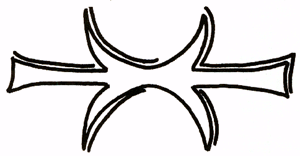
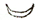
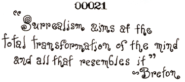

The official symbol of POEE is here illustrated. It may be this, or any similar device to represent TWO OPPOSING ARROWS CONVERGING INTO A COMMON POINT. It may be vertical, horizontal, or else such, and it may be elaborated or simplified as desired.
The esoteric name for this symbol is THE FIVE FINGERED HAND OF ERIS, commonly shortened to THE HAND.

NOTE: In the lore of western magic, the  is taken to symbolize horns, especially the horns of Satan or of diabolical beasties. The Five Fingered Hand of Eris, however, is not intended to be taken as satanic, for the "horns" are supported by another set, of inverted "horns". Or maybe it is walrus tusks. I don't know what it is, to tell the truth.
